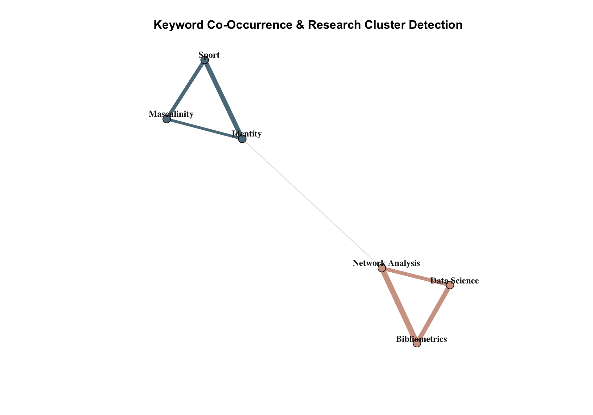

| Keyword | Masculinity | Sport | Identity | Network Analysis | Bibliometrics | Data Science |
|---|---|---|---|---|---|---|
| Masculinity | 0 | 4 | 3 | 0 | 0 | 0 |
| Sport | 4 | 0 | 5 | 0 | 0 | 0 |
| Identity | 3 | 5 | 0 | 1 | 0 | 0 |
| Network Analysis | 0 | 0 | 1 | 0 | 6 | 4 |
| Bibliometrics | 0 | 0 | 0 | 6 | 0 | 5 |
| Data Science | 0 | 0 | 0 | 4 | 5 | 0 |
Introduction
These pages contain an occasional exploration of the thematic structure of the scholarly output of Saint Mary’s University. I’m leaning on methods of bibliometric network analysis and focusing on the co-word occurrence patterns of keywords. Please keep in mind that everything here is in development–and as errors emerge or things change, I’ll update what I’m on about here. For those interested in programming details, see this footnote.1
This exercise is based on 36 years of SMU-affiliated research, from January 1990 through December 2025. The corpus is restricted to publications for which the institutional affiliation metadata explicitly identifies SMU. No restrictions were placed on document type. These deliberately broad parameters were intended to capture the full range of scholarly outputs indexed by Web of Science (WoS) that can be attributed to faculty, staff, and researchers associated with SMU, providing a basis for examining publication behaviour, research activity, and patterns of connection and collaboration across the university community over the period.
The search produced a corpus of 7,850 publications appearing across 2,862 different publication sources, reflecting a wide range of scholarly venues and the disciplinary breadth of the university. The corpus should not, however, be treated as a complete inventory of everything produced at SMU. Web of Science is widely used for bibliometric research, but, like all bibliographic databases, it is selective. Its coverage tends to favour English-language journals and disciplines in which journal articles and collaborative publication are dominant forms of scholarly communication. Fields in which research is more often communicated through books, book chapters, regional journals, professional publications, or other locally oriented venues may therefore be less completely represented. This is particularly consequential for some areas of the humanities and social sciences. The analysis should accordingly be understood as a description of the SMU research activity visible through Web of Science rather than an exhaustive account of the university’s entire research culture. Having said that, a manual review of the publications suggests that the coverage across disciplines is robust.
The How: Co-word Analysis
I use keyword co-occurrence analysis to examine the substantive organization of the SMU-affiliated corpus. The method belongs to the same broad family of bibliometric techniques as co-citation and co-author analysis, but its object is different: rather than asking which authors collaborate or which publications are cited together, it asks which research keywords co-occur across a collection of publications. Authors and databases use keywords to characterize the content of a publication, typically identifying concepts, topics, methods, populations, objects of study, or research problems. The underlying assumption is that these keywords are not distributed randomly. When two keywords repeatedly appear together in the same publications, that recurrence provides evidence that the ideas are being brought into relation within the literature. Co-word analysis therefore allows me to move from a collection of individual publications to a representation of the substantive relationships that recur across the corpus, without beginning from a predetermined classification of the literature.
A keyword co-occurrence network is constructed by first counting these relationships. In the simplified example, a co-occurrence matrix contains six research keywords in its rows and columns, with each intersecting cell recording how many times a pair of keywords appears together. Sport and Identity, for example, have a co-occurrence value of five, whereas Identity and Network Analysis co-occur only once.
The matrix is then converted into an undirected, weighted network using methods of network analysis. Each keyword becomes a node, and an edge connects two nodes when the corresponding keywords occur together in at least one publication. The weight of the edge records the frequency of that co-occurrence, allowing more recurrent relationships to be represented by thicker lines.
Once represented as a network, additional measures can be used to describe the position of individual keywords and the structure of the network as a whole. Degree records the number of other keywords to which a keyword is directly connected, so a high-degree keyword is more extensively embedded in the network than one with relatively few connections. Clustering algorithms such as Louvain identify groups of keywords that are more densely connected to one another than to the rest of the network.

In the toy example, Masculinity, Sport, and Identity form one such group, while Network Analysis, Bibliometrics, and Data Science form another. The strongest relationships include Network Analysis–Bibliometrics (6), Sport–Identity (5), and Bibliometrics–Data Science (5). By contrast, the single co-occurrence between Identity and Network Analysis creates a comparatively weak bridge between the two clusters. The visualization therefore makes both internal cohesion and cross-cluster connection visible. Spatial position should be interpreted cautiously, however, because it is partly a consequence of the layout algorithm rather than an independent substantive property.
What the resulting network reveals is not simply which keywords are common, but how the substantive vocabulary of a research corpus is organized relationally. Nodes identify the concepts present in the literature; degree indicates how broadly those concepts are connected; edge weights show which associations recur more or less frequently; and clusters identify concentrations of keywords that repeatedly occur together. When the highly connected keywords within a cluster point toward a coherent substantive concern, those clusters can reasonably be interpreted as research areas or thematic formations. The network can also identify bridging concepts that connect otherwise distinct areas of research and more peripheral keywords that occupy specialized positions.
If you’ve made it this far…
You’ll probably want to navigate to Describing the Keyword Network (links at the top of the page) where you’ll be able to explore some of details of the intellectual network that emerges from bibliometric treatments of this corpus of publications. Be sure to head to the author look up table. Web of Science does a pretty good job of indexing and is one of the standards used in bibliometric research, but it is not exhaustive. A search for yourself or others you know will provide you with a measure–or not–of how valid my emerging suggestions are. Describing the Corpus provides a few global measures–most cited publications and growth rate of the corups, for example–of the scholarship at SMU.
References
Aria, Massimo, and Corrado Cuccurullo. 2017. “Bibliometrix: An r-Tool for Comprehensive Science Mapping Analysis.” https://doi.org/10.1016/j.joi.2017.08.007.
Footnotes
To think through this exercise, I’m relying heavily on the R programming universe and, in particular, on the Bibliometrix package (Aria and Cuccurullo 2017).↩︎